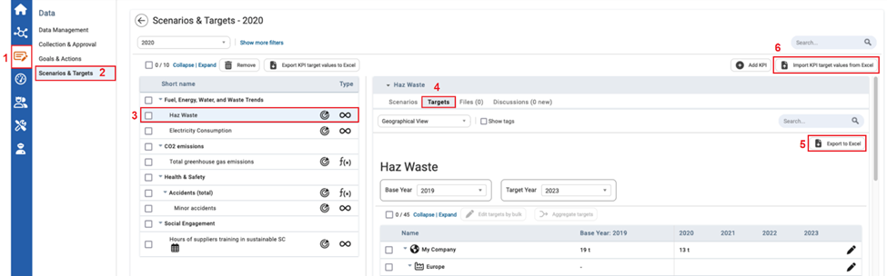
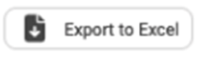

In the Scenarios and Targets module, users can download, fill, and upload Target Value documents into the module.
To Import and Export Target Value Excel Document for a KPI

| 1 | On the left navigational panel, click the Data icon. The Data menu appears. |
| 2 | Click Scenarios & Targets. The Scenario & Targets window appears. |
| 3 | Click a KPI. Information of the KPI will appear to the right. |
| 4 | In the information section of a KPI, click the Targets tab. |
| 5 | Click  . The Excel document to input KPI target values downloads. |
| 6 | Once Target Values are inputted into the Excel document, save changes on your local computer, and click Import KPI Target Values from Excel. The File Explorer window appears, select the Excel document to import. The Excel document with Target Values uploads to the system to the KPI selected. |